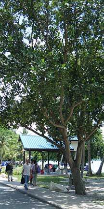
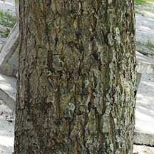
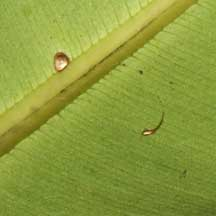
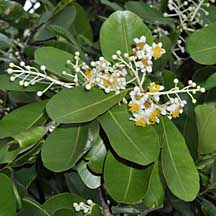
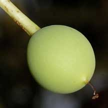
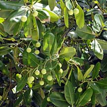
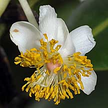

|
|
| plants text index | photo index |
| coastal plants |
| Penaga
laut Calophyllum inophyllum Family Calophyllaceae updated Jan 2013 Where seen? A beautiful tree with white fragrant flowers that sparkle like stars against the dark green leaves. The fruits look like green ping-pong balls. In Singapore it is not commonly seen in the wild, but it is often planted in our coastal parks. It was commonly seen on 'non-swampy' sandy beaches and rocky shores, and is also often planted as a roadside tree and in gardens. Other names for it include 'Alexandrian laurel' and 'Bintangur Laut'. Features: A slow-growing tree that can grow quite tall and spreading (10-30m tall), often crooked, leaning or even growing along the ground. Bark dark and fissured. It has no buttress or other root modifications. A milky latex, whitish or yellowish, sticky, opaque and resin-like, exudes from all cut surfaces. Leaves oval (8-18cm long) glossy dark green with close-set, fine parallel veins. 'Calophyllum' means 'beautiful leaf' and indeed, the tree is quite lovely. Flowers (about 1cm) with delicate white petals and a puff of golden yellow stamens. 4-15 flowers emerge from a spike. The flowers have a sweet fragrance, starting to bloom before dawn to open fully by sunrise and wither within the next day. According to Tomlinson, the flowers are almost certainly pollinated by insects. According to Corners, this "sweetest smelling of any Malayan tree" attracts "innumerable insects". According to Tee, flowering tends to occur twice a year, in April-June and October-December. It takes many years before this slow-growing, long-lived tree starts to bloom. Fruit (2.5-3cm) smooth, globular with one large seed which is slightly poisonous. The seed is enclosed in a thin stony layer surrounded by a spongy layer. The fruit floats for extended periods as does the seed. But there are also records of it being dispersed by bats which eat the fleshy outer layers. Role in the habitat: According to Corners, the fruits of Calophyllum species are dispersed by bats and for those that grow by the river, by fish! In fact, the fruits of the Bintangor tree (Calophyllum lanigerumare) are used as fish bait by the Malays. Human uses: According to Burkill, the tree produces "excellent, close-grained timber" and is highly valued in making various parts of boats, as well as other non-coastal uses such as for railway sleepers, in cart-wheels and making furniture. Even though the fruit is poisonous, the endosperm is eaten in some places as a pickle. Oil extracted from the crushed seeds are used for lamps, as well as medications for skin ailments. The resin, leaves and roots also have various medicinal uses. According to Tomlinson, the tree has many local uses as a source of dye, oil, timber and medicine. According to Corners, "the gum, bark, leaves, roots, flowers and oil from the seeds are put to such an astonishing variety of cures in native medicines that we could call the tree All Heal". The oil which sweats from the drying seeds is poisonous. A relative of this plant, the Bintangor Tree (Calophyllum lanigerum var. austrocoriaceum) produced a new compound, Calanolide A, that was found highly effective in controlling the AIDS virus in the laboratory. The compound was extracted from a twig and fruit of a tree growing in Sarawak, Malaysia. Calanolide A has since been synthesised and is still being tested as an AIDS control. Status and threats: It is listed as 'Critically Endangered' on the Red List of threatened plants of Singapore. Heritage Trees: There are five Penaga laut trees with Heritage Tree status: at the Singapore Botanic Gardens, near Botany Centre Auditorium with a girth of 6.8m and height of 24m, at Pepys Road Museum with a girth of 6.2m and height of 25m, in the Istana Ground with a girth of 5.4m and height of 16m, St John's Island (Blk 12 & 13) with a girth of 4.7m and height of 15m, and Canterbury Road, at junction with Berkshire Road with a girth of 4.5m and height of 18m. |
 Planted in a park. Changi Beach, Apr 09  Changi, Apr 09  Fine parallel veins on leaf. Sentosa, Oct 03  Pulau Ubin, Jan 09 |
|
 Fruit. Sentosa, Oct 03 |
 Changi, Apr 09 |
 Pulau Ubin, Jan 09 |
| Penaga laut on Singapore shores |
| Photos of Penaga laut for free download from wildsingapore flickr |
| Distribution in Singapore on this wildsingapore flickr map |
|
Links
References
|
|
|